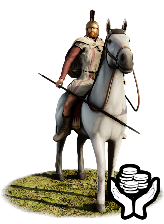
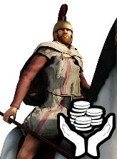
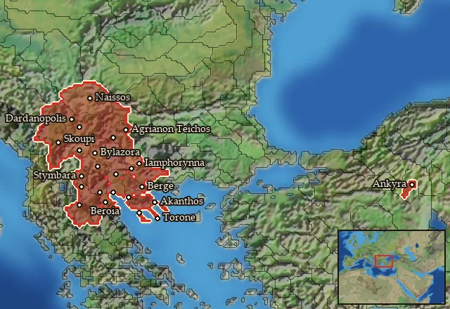

RTR: Imperium Surrectum
RTR: Imperium SurrectumMercenary Paionian Cavalry


Mercenary. Hired from a regional pool, not recruited from a building.
Class: light · Category: cavalry · Men per unit: 30
Description
Paionian horsemen are tough shock cavalry, armed with long lances (the xyston) as well as swords and protected by metal reinforced Linothorakes, crested Attic helmets, and head armour for their horses. Hailing from the mountainous lands of Paionia in the Haimos (Balkan) mountains, these Thraco-Illyrian people are used to fighting in harsh conditions. They are, therefore, a great asset for any army, Paionian, Thracian or Macedonian.
Historical background
The Paionians lived in the valley of the river Axios (Vardar) and the surrounding mountains, in the lands to the northwest of Macedon (Thuc. 2.98.2; Strab. 7.5.1C313). Homer mentions them as allies of the Trojans and calls them "lords of chariots" (Hom. Il. 16.289) and "bearing long spears" (Il. 21.155) – the latter may already refer to lancer cavalry. Around 500 BC, those Paionians dwelling around Lake Prasias were deported by the Persian general Megabazos and brought to Phrygia (Hdt. 5.16-17), though some of them may have returned. The other Paionians survived the Persian invasion in the Haimos (Balkan) mountains, and in the 5th century founded a kingdom that threatened Macedon. It was not before Philip II that the Macedonians could turn things around: Alexander’s father won a series of stunning victories over the Paionians and forced them into submission (Diod. 16.1.5; 2.6; 3.4; 4.2). The 1st century BC historian Diodoros of Agyrion tells us that 900 Thracians, Prodromoi and Paionians were part of Alexander's army that crossed into Asia (Diod. XVII, 17, 4). Ariston, the leader of the Paionian contingent, was famed for his bravery and mastery of the xyston, and his force became an elite unit within Alexander’s army (Curt. 4.9.24-25; Hammond, Cavalry (1998), p. 411).
In the struggles that followed Alexander’s death, the Paionians seem to have regained their independence. The travel writer Pausanias (2nd century AD) mentions a Paionian king Leon and his son Dropion, who can be dated to the 3rd century BC (Paus. 10.13.1) – in RIS, they appear as starting characters in Paionia. In the second half of the century, the Paionians were under increasing pressure from the neighbouring Dardanians, who presented a formidable threat to the Macedonian kingdom. In 231 BC, they overran Paionia – two years later, the kingdom was extinguished (Chaniotis, War in the Hellenistic World (2005), p. 6 for the dates). When Philip V of Macedon (238-179 BC) conquered the Paionian capital Bylazora around a decade later, he incorporated it into Macedon (Polyb. 5.97.1-2). The history of an autonomous Paionia was over for good.
A Paionian king called Patraos (340-315 BC), possibly the brother of Alexander’s cavalry commander Ariston (Heckel, Who’s Who (2006), p. 246), appears on coins (SNG ANS 1032 var.; SNG ANS 1040 var.; Peykov E2200). They depict a horseman in a vertically striped short-sleeved tunic who is seated on a large fur or sheepskin saddle cloth and kills a Macedonian Peltast. The rider wears a crested Attic helmet, a xyston, a sword on a baldric and a cuirass, possibly a Linothorax reinforced with metal. Since the coin portrays the king, we have decided to include some riders without armour – not everyone could afford such costly equipment. However, all of their horses wear head armour, which can also be made out on the coins. Finally, some riders have long sleeves as some of those depicted on the Alexandrovo tomb paintings from Thrace – in winter, Paionia would be covered in snow. This is also the reason why they are wearing cloaks.
Stats
| Rank in roster | Rank in roster | Rank in roster | Rank in roster | ||||||||
|---|---|---|---|---|---|---|---|---|---|---|---|
| Men per unit | 30 | █········· 8% | Attack | 11 | ████······ 44% | Charge bonus | 26 | ████████·· 84% | Defence | 25 | ███······· 29% |
| · armour | 7 | ████······ 42% | · defence skill | 18 | ████······ 38% | · shield | 0 | █········· 0% | Morale | 11 | ████······ 40% |
| Discipline | Normal | Training | Untrained | Upkeep per turn | 746 dn | ███████··· 73% |
Weapons
| Primary | Secondary | Primary | Secondary | Primary | Secondary | Primary | Secondary | ||||
|---|---|---|---|---|---|---|---|---|---|---|---|
| Attack | 11 | 8 | Charge bonus | 26 | 22 | Type | melee · blade | melee · blade | Damage | piercing | slashing |
| Properties | — | Armour-piercing (counts only half the target's armour) |
Defence
| Primary | Secondary | Primary | Secondary | Primary | Secondary | Primary | Secondary | ||||
|---|---|---|---|---|---|---|---|---|---|---|---|
| Total | 25 | — | Armour | 7 | — | Defence skill | 18 | — | Shield | 0 | — |
Condition and terrain
| Hit points | 1 | Mount | medium horse | Ground: scrub / sand / forest / snow | -2 / 0 / -7 / 0 | Charge distance | 40 |
| Formations | Square |
Technical stats
| Time between blows (primary / secondary) | 2.5 s / 2.5 s | Extra fatigue in hot climates | 1 | Spacing between men: close / loose | 2 × 4.8 m / 3 × 7.2 m | Default ranks | 5 |
In battle: Very good stamina
Where to hire it
Mercenaries are hired from a regional pool, not recruited from a building. This unit is offered by 3 pools covering 24 regions, at 4,281–4,774 dn to hire and 2–3 experience.

At least one of those pools sells to any faction that has an army in range — no faction restriction.
Some pools additionally restrict it to Galatians.
The 24 regions where this unit appears in a mercenary pool
Agriania · Akte · Amphaxitis · Anatolike Dardania · Axios · Bisaltia-Krestonia · Bottiaia · Chalkidike · Dardania · Denthelentike · Deuriopos-Pelagonia · Emathia · Erigonia · Galabria · Lynkestis-Eordaia · Maidia · Mygdonia · Naissitania · Nea Tektosagia · Notia Bottiaia · Orestis-Elimeia · Paionia · Sintike-Odomantike · Sithonia